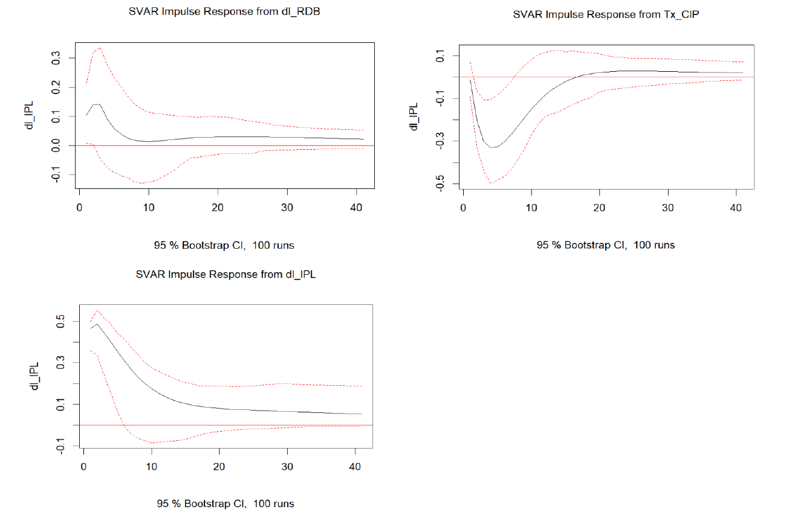
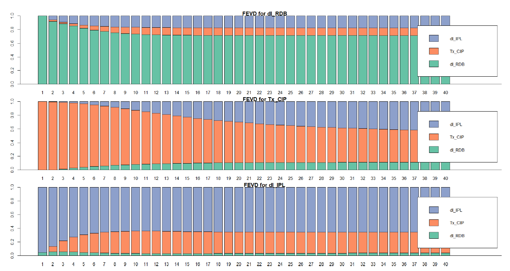

This study analyzes the evolution of the house price index in France between 2001 and 2019, using a structural variable (SVAR) model. The motivation stems from growing concerns about the sustained rise in house prices, which has been higher than consumer price growth in OECD countries. In France, the house price index has increased significantly, from 80.5 in 2000 to 131.7 in 2022, generating significant economic and social effects, such as greater inequality in access to housing between different economic strata, rising cost of living and reduced household consumption, and greater population indebtedness.
In response to this problem, the study aims to identify the macroeconomic determinants that influence house prices in France at the national level, analyzing how structural shocks to key variables affect their evolution.
Below you can find a summary of the data, methodology and key findings, and you can access the whole document here.
Data
Quarterly data from 2001 to 2019 were used from INSEE and the Crédit Logement/CSA Observatory. The three variables selected for the analysis were:
- House Price Index (HPI): Represents the index of new and existing housing prices in metropolitan France.
- Mortgage Credit Rate (Tx_CIP): Captures the financing costs for home purchases.
- Gross Disposable Income (GDI): Represents the amount of income available to households after taxes and social security contributions.
Data treatment
A stationarity test was performed using the Dickey-Fuller (DFT) test, revealing that the housing price index and gross disposable income are non-stationary series and were transformed into growth rates for the analysis. Similarly, an outlier was detected in the PPI in the fourth quarter of 2016, but it was considered valid because it represents an economic event and not a measurement mistake. Finally, the presence of seasonality in the series was ruled out.
Methodology
To analyze the relationship between variables, a structural VAR model (SVAR) was used. This model allows to identify the causal impact of economic shocks on housing prices and decompose the effects of each variable on the others using the Cholesky decomposition.
To identify shocks in the SVAR model, the following hierarchical order of variables was established based on economic theory:
- Gross disposable income (GDI): This is considered the most exogenous variable, as it directly affects housing demand and credit, but is not immediately impacted by other variables.
- Mortgage lending rate (Tx_CIP): This is affected by household income, but does not immediately influence it.
- House Price Index (HPI): The most endogenous variable, as it responds to changes in credit and income, but does not immediately affect them.
Results
Genger causality test
To start with, we applied the Genger causality test, which allows us to determine whether a time series helps predict another one, evaluating whether past values of a variable X contain useful information for predicting future values of another variable Y, beyond the information already provided by variable Y itself. If so, X is said to “Granger-cause” Y. The results have shown that:
Growth in the house price index Genger causes changes in the mortgage lending rate and gross disposable income.
The mortgage lending rate causes changes in house prices and gross disposable income.
Gross disposable income does not cause house prices or the lending rate.
The lending rate and disposable income jointly cause the house price index.
Shock Response Functions
Impulse Response Functions (IRFs) analyze how one variable responds to an unexpected change in another within a dynamic system. When an exogenous shock occurs, such as a sudden increase in interest rates, IRFs show how this disturbance affects other variables, such as housing prices. Through graphs, these functions reveal the magnitude, duration, and direction of the impact. When confidence intervals do not contain zero, the impact is significant.
The Shock Response Funtions of our study are available in figure 1 and show that a positive shock to gross disposable income increases the growth of the house price index briefly and temporarily (approximately two quarters). On the contrary, a positive shock to the mortgage lending rate persistently reduces the growth of the house price index, with a significant negative impact for seven quarters. Finally, a shock to the house price index generates a positive impact on its own growth for up to five quarters, indicating an inertia effect in the market.
Figure 1: Shock Response Functions

Variance Decomposition of Forecast Errors
Finally, the variance decomposition of forecast errors allows us to understand how much of the future variability of a variable is due to shocks in itself and how much is explained by shocks in other variables. Figure 2 reveals that, in the short term (horizon 1), the growth of the house price index is explained by 95% of its own history. In the long term (horizon 10), the mortgage loan rate explains up to 33% of the variability in the house price index, while gross disposable income has a much smaller impact (6%). It is noteworthy that the impact of income and the housing price index itself diminishes over time, while mortgage credit becomes progressively more important in the early periods.
Figure 2: Variance Decomposition of Forecast Errors

Conclusion
In conclusion, the study highlights the crucial role of monetary policy and interest rates, as well as the lesser influence of household income, in regulating the French real estate market. It is particularly recommended that interest rate developments be considered as a mechanism to control inflation in the housing sector and avoid real estate bubbles that could lead to economic crises.